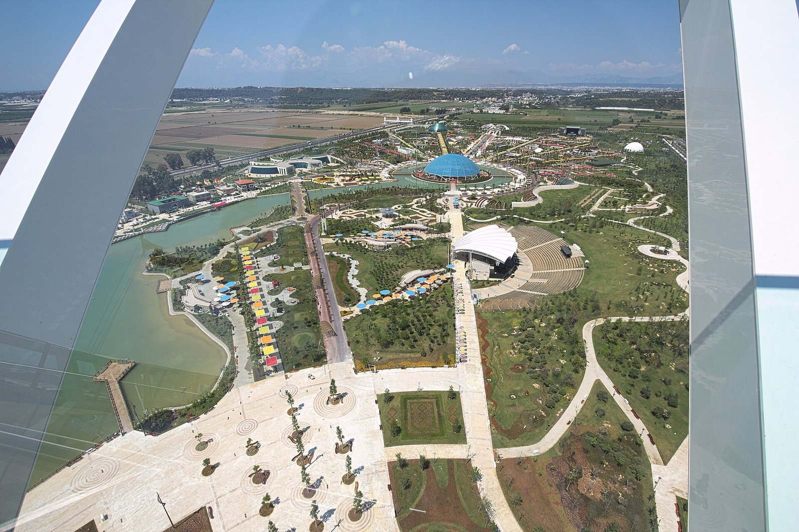

In 3 punti · Mondo
COP31 ai supplementari: il clima senza petrolio e gas?
La conferenza di Antalya va oltre la scadenza. L'ultima bozza non nomina più i combustibili fossili, l'Ue minaccia di non firmare e dai fondi per l'adattamento sparisce l'obiettivo da 120 miliardi.

La COP31, la conferenza dell'Onu sul clima di Antalya, in Turchia, doveva chiudersi venerdì 20 novembre. La presidenza turco-australiana ha prorogato i negoziati e sabato 21, al momento della pubblicazione di questo articolo, un accordo non c'era ancora. In bilico c'è la cover decision, il documento politico finale. Avevamo raccontato le premesse in COP31 ad Antalya.
1I combustibili fossili spariscono dal testo
Alla COP28 di Dubai, nel 2023, i Paesi si erano impegnati per la prima volta ad «allontanarsi dai combustibili fossili» nei sistemi energetici. La prima bozza di Antalya citava ancora carbone, petrolio e gas; la seconda, uscita giovedì 19 novembre, non li menziona più. Secondo il centro studi italiano Ecco, a frenare su emissioni, fossili e scienza sono stati i grandi produttori di petrolio e gas, tra cui Russia e Arabia Saudita; secondo Adnkronos, il fronte ha avuto il sostegno di Cina e India e ha ottenuto in cambio anche un'apertura alla cattura e stoccaggio della CO2. Almeno 23 Paesi si sono opposti alla cancellazione, riporta Carbon Brief, e il ministro dell'Ambiente di Panama ha minacciato di bloccare un esito senza impegni sul petrolio.
Il nuovo cuore del testo è l'obiettivo «35 by 35» della presidenza: portare l'elettricità dal 23% al 35% dei consumi finali mondiali di energia entro il 2035, insieme a triplicare le rinnovabili e raddoppiare il ritmo dell'efficienza energetica entro il 2030.
2Le tre condizioni dell'Europa
Secondo una fonte del negoziato citata dall'Ansa, la delegazione Ue, guidata dal commissario Wopke Hoekstra, considera inaccettabile la bozza e chiede tre cose: tornare a citare l'uscita dai combustibili fossili (se i Paesi petroliferi vogliono la cattura della CO2, devono accettarla); un'elettrificazione alimentata solo da fonti a zero emissioni, cioè rinnovabili e nucleare; i nuovi rapporti dell'Ipcc prima del bilancio globale del 2028. Senza questi punti l'Ue potrebbe non firmare.
3I soldi per l'adattamento
Sulla finanza climatica nessun testo è chiuso, secondo Ecco. La seconda bozza ha eliminato l'obiettivo da 120 miliardi di dollari per l'adattamento: restano mandati per definire la base di calcolo dell'impegno a triplicare questi fondi, preso l'anno scorso alla COP30 di Belém, e una «roadmap Antalya-Addis Abeba» per mobilitarli. «Non chiediamo assistenza, chiediamo ai Paesi sviluppati di onorare le promesse che hanno già fatto», ha detto la ministra dell'Ambiente del Ghana, Zanetor Agyeman-Rawlings. Nel 2025 l'Ue e i suoi Stati hanno fornito 32,3 miliardi di euro di finanza pubblica per il clima, quasi la metà per l'adattamento.
Il conto per l'Italia
Il ministro dell'Ambiente Gilberto Pichetto Fratin, che ha guidato la delegazione nella seconda settimana, ha detto che l'obiettivo del 35% di elettrificazione «deve essere un obiettivo dell'Italia» e ha chiesto che l'elettricità venga solo da fonti pulite, cioè per il governo rinnovabili e nucleare. Sull'uscita dai fossili ha parlato di «un percorso che stiamo elaborando» e ha aggiunto: «Faremo una valutazione a livello di governo». Per l'Italia, nel Mediterraneo che si è già scaldato di circa 1,5 gradi, il fallimento o la debolezza dell'accordo pesano due volte.
La domanda di ParrhesIA: una conferenza sul clima che non nomina più petrolio e gas serve ancora?
Fonti
- Ansa, 20 novembre 2026: Cop31, trattativa in alto mare, la chiusura slitta a sabato
- Ansa, 21 novembre 2026: Cover Decision a rischio, l'Ue vuole l'uscita dai fossili
- Ansa, 21 novembre 2026: Ecco, sulla finanza climatica nessun testo è ancora chiuso
- Adnkronos Prometeo, 20 novembre 2026: la bozza finale elimina l'uscita dai combustibili fossili
- Carbon Brief, 20 novembre 2026: DeBriefed, deal distant
- Valori, 21 novembre 2026: ad Antalya si continua a negoziare
Questo articolo è stato scritto con l'intelligenza artificiale e verificato sulle fonti indicate. Hai trovato un errore? Segnalalo sui nostri social: le correzioni vengono pubblicate qui con la data della modifica.